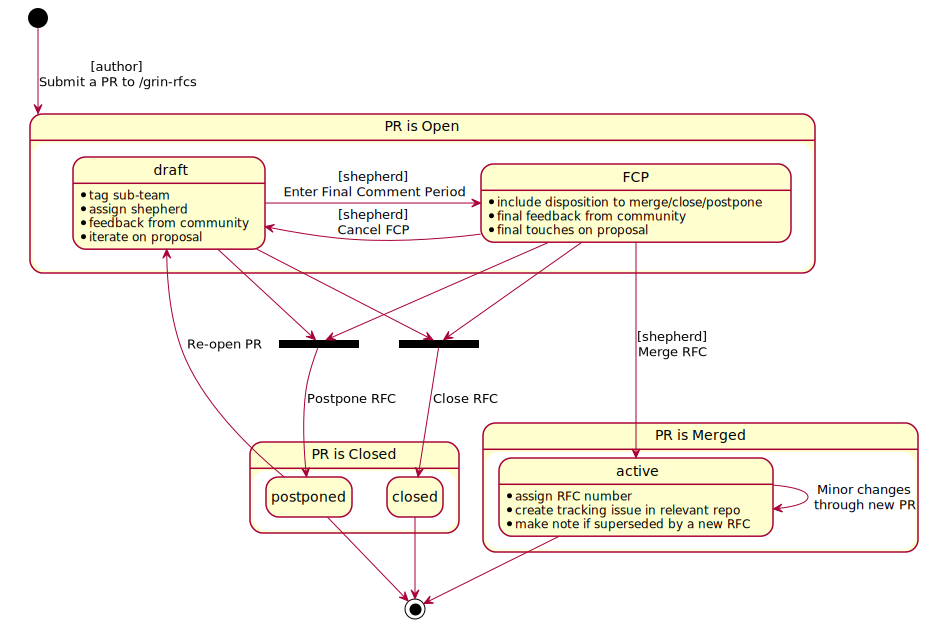

0001 rfc-process
- Title: rfc-process
- Authors: joltz, yeastplume, lehnberg
- Start date: June 21st, 2019
Summary
The "RFC" (request for comments) process is intended to provide a consistent and controlled path for improvements to be made to Grin.
Motivation
Many changes, including bug fixes and documentation improvements can be implemented and reviewed via the normal GitHub pull request workflow.
Some changes though are "substantial", and could benefit from being put through a more formal design process in order to produce a consensus among Grin community participants and stakeholders.
When this process should be followed
You need to follow this process if you intend to make "substantial" changes to the Grin codebase or governance process. What constitutes a "substantial" change may evolve based on community norms and individual definitions of sub-teams, but may include the following.
- Any semantic or syntactic change to the wallet, node, miner, or underlying crypto libraries that is not a bugfix.
- Major changes in ecosystem content such as the docs, site or explorer.
- Removing Grin features, including those that are feature-gated.
Some changes do not require an RFC:
- Rephrasing, reorganizing, refactoring, or changes that are not visible to Grin's users.
- Additions that strictly improve objective, numerical quality criteria (warning removal, speedup, better platform coverage, more parallelism, trap more errors, etc.)
- Additions only likely to be noticed by other developers-of-grin, invisible to users-of-grin.
If you submit a pull request to implement a new feature without going through the RFC process, it may be closed with a polite request to submit an RFC first.
Team specific guidelines
To be added here once available.
Before creating an RFC
A hastily-proposed RFC can hurt its chances of acceptance. Low quality proposals, proposals for previously-rejected features, or those that don't fit into the near-term roadmap, may be quickly rejected, which can be demotivating for the unprepared contributor. Laying some groundwork ahead of the RFC can make the process smoother.
Although there is no single way to prepare for submitting an RFC, it is generally a good idea to pursue feedback from other project contributors beforehand, to ascertain that the RFC may be desirable; having a consistent impact on the project requires concerted effort toward consensus-building.
Ways to prepare and pave the way for writing and submitting an RFC include discussing the topic or posting "pre-RFCs" to our forum for feedback.
As a rule of thumb, receiving encouraging feedback from long-standing project contributors, and particularly members of the relevant team (if applicable) is a good indication that the RFC is worth pursuing.
Process description
In order to make a "substantial" change to Grin, one must first get an RFC merged into the RFC repo as a markdown file. At that point the RFC is "active" and may be implemented with the goal of eventual inclusion into Grin.

Stages in detail
Submission
- Fork the RFC repo https://github.com/mimblewimble/grin-rfcs
- Copy
0000-template.mdtotext/0000-my-feature.md(where "my-feature" is descriptive. don't assign an RFC number yet). - If you include any assets, do so as
/assets/0000-asset-description.xxx - Write the RFC according to the template instructions.
- Submit a pull request. As a pull request the RFC will receive design feedback from the larger community, and the author should be prepared to revise it in response.
Draft
- Each pull request will be labeled with the most relevant team, which will lead to it being triaged by that team and is assigned a shepherd from this team. The shepherd ensures the RFC progresses through the process and that a decision is reached, but they themselves do not make this decision.
- As the author, you build consensus and integrate feedback. RFCs that have broad support are much more likely to make progress than those that don't receive any comments. They are encouraged to reach out to the RFC shepherd in particular to get help identifying stakeholders and obstacles.
- The relevant team discuss the RFC pull request, as much as possible in the comment thread of the pull request itself. Offline discussion will be summarized on the pull request comment thread.
- RFCs rarely go through this process unchanged, especially as alternatives and drawbacks are shown. As an author you can make edits, big and small, to the RFC to clarify or change the design,but make changes as new commits to the pull request, and leave a comment on the pull request explaining your changes. Specifically, do not squash or rebase commits after they are visible on the pull request.
Final Comment Period (FCP)
- At some point, a member of the assigned team will propose a "motion for final comment period" (FCP), along with a disposition for the RFC (merge, close, or postpone).
- This step is taken when enough of the tradeoffs have been discussed that the team is in a position to make a decision. That does not require consensus amongst all participants in the RFC thread (which is usually impossible). However, the argument supporting the disposition on the RFC needs to have already been clearly articulated, and there should not be a strong consensus against that position outside of the team. Team members use their best judgment in taking this step, and the FCP itself ensures there is ample time and notification for stakeholders to push back if it is made prematurely.
- For RFCs with lengthy discussion, the motion to FCP is usually preceded by a summary comment trying to lay out the current state of the discussion and major tradeoffs/points of disagreement.
- The FCP lasts ten calendar days, so that it is open for at least 5 business days. It is also advertised widely (i.e. in Grin News). This way all stakeholders have a chance to lodge any final objections before a decision is reached.
- In most cases, the FCP period is quiet, and the RFC is either merged or closed. However, sometimes substantial new arguments or ideas are raised, the FCP is canceled, and the RFC goes back into draft mode.
Active
- As FCP concludes and there are no objections to accepting the RFC, it gets merged into
/grin-rfcsand becomes "active". - Before merging, the shepherd:
- updates the RFC to give it an RFC number (which is the same as the number of the initial Pull Request).
- Renames the markdown file accordingly and any accompanied assets.
- If a tracking issue on the repo affected by the RFC has created, it is linked to in the header.
- Once active, the authors may then implement it and submit the feature as a pull request to the relevant repo.
- Being "active" is not a rubber stamp, and in particular still does not mean the feature will ultimately be merged; it does mean that in principle all the major stakeholders have agreed to the feature and are amenable to merging it.
- Furthermore, the fact that a given RFC has been accepted and is "active" implies nothing about what priority is assigned to its implementation, nor does it imply anything about whether a developer has been assigned the task of implementing the feature.
- While it is not necessary that the author of the RFC also write the implementation, it is by far the most effective way to see an RFC through to completion: authors should not expect that other project contributors will take on responsibility for implementing their accepted feature.
- Modifications to "active" RFCs can be done in follow-up pull requests. We strive to write each RFC in a manner that it will reflect the final design of the feature; but the nature of software development means that we cannot expect every merged RFC to actually reflect what the end result will be at the time of implementation.
- In general, once accepted, RFCs should not be substantially changed. Only very minor changes should be submitted as amendments. More substantial changes should be new RFCs, with a note added to the original RFC. Exactly what counts as a "very minor change" is up to the team to decide; check team specific guidelines for more details.
Postponed
- Some RFC pull requests are tagged with the "postponed" label when they are closed (as part of the rejection process).
- An RFC closed with "postponed" is marked as such because we want neither to think about evaluating the proposal nor about implementing the described feature until some time in the future, and we believe that we can afford to wait until then to do so.
- Postponed pull requests may be re-opened when the time is right. We don't have any formal process for that, you should ask members of the relevant team.
- Usually an RFC pull request marked as "postponed" has already passed an informal first round of evaluation, namely the round of "do we think we would ever possibly consider making this change, as outlined in the RFC pull request, or some semi-obvious variation of it." (When the answer to the latter question is "no", then the appropriate response is to close the RFC, not postpone it.)
Closed
- A proposed RFC can be closed at any time before reaching "active" state. This is done by closing the pull request itself. This would happen for example if there is no support in the community for the proposal or if there are other underlying reasons why this is not a change the community wants to make.
Changes to the RFC process
In the spirit of the proposed process itself, a future "substantial" overhaul to the RFC process should be opened as a new RFC rather than making edits to this RFC. Minor changes can be made by opening pull requests against this document.
As the RFC process is something that should be consistent across all teams and the project as a whole, changes to the process fall under Core's remit. As they evaluate proposals to modify the process, they are expected to consult with teams, and other stakeholders using or being affected by the process.
Drawbacks
- May not encourage sufficient community engagement
- May slow down needed features
- May allow some features to be included too quickly
Rationale and alternatives
Alternatively, retain the current informal RFC process. The proposed RFC process is designed to improve over the informal process in the following ways:
- Discourage unactionable or vague RFCs
- Ensure that all serious RFCs are considered equally
- Improve transparency for how new features are added to Grin
- Give confidence to those with a stake in Grin's development that they understand why new features are being merged
- Assist the Grin community with feature and release planning.
As an alternative, we could adopt an even stricter RFC process than the one proposed here. We could for example look to Bitcoin's BIP or Python's PEP process for inspiration.
Prior art
This process draws inspiration extensively from Rust's RFC process, where much credit for the process is due.
Most decentralized cryptocurrency projects have adopted an RFC-like process to manage adding new features.
Bitcoin uses BIPs which are an adaptation of Python's PEPs. These processes are similar to the Rust RFC process which has had success in the Rust community as well as in other cryptocurrency projects like Peercoin.
Unresolved questions
- Does this RFC strike a favorable balance between formality and agility?
- Does this RFC address the issues with the current informal process adequately?
Future possibilities
This proposal was initially based on an RFC process for codebase development. As the process evolves it will have a larger impact in the governance of Grin. This is a relatively new area of exploration as governance processes can have wide ranging impacts on the ecosystem as a whole.
Just as it is important to hone the language to support the development process and life-cycle, it is also important to sharpen the language to support governance processes and life-cycles for the Grin ecosystem.